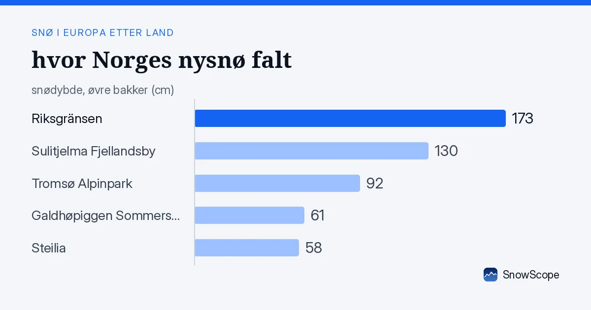

76 cm i Jotunheimen: hvor Norges nysnø falt
76 cm på 72 timer i Jotunheimen; 74 cm i Hardangervidda. Disse to områdene mottok mest snø fra det siste systemet, noe som markerer et skarpt skift i forholdene siden for en uke siden.
Se snøprognosen for Riksgränsen direkte i SnowScope-appenSnødybde, puddervarsler og 3D-kartet, gratis.
Hvor snøen falt
Jotunheimen og Hardangervidda skiller seg ut som de to områdene som fikk mest snø. Jotunheimen, i det sentrale høyfjellet, fikk 76 cm på 72 timer. Hardangervidda, høyfjellet i sør, fikk 74 cm. Dette er områdene hvor du finner den friskeste nysnøen fra denne hendelsen.
Begge områdene vender mot atlantisk fuktighet direkte og ligger i høy høyde, så de får alltid mest snø fra hvert passerende system. Dette mønsteret holdt seg igjen. Norges geografi betyr at du kan spore hvor snø faller ved å se opp og vestover; disse to områdene er det naturlige målet når et system skyver inn fra havet.
| Skisted | Snødybde | Nysnø, 72 t | På vei, neste dager | Topp |
|---|---|---|---|---|
| Riksgränsen | 173 cm | 4 cm | 5 cm | 900 m |
| Sulitjelma Fjellandsby | 130 cm | 10 cm | 3 cm | 542 m |
| Tromsø Alpinpark | 92 cm | 8 cm | 4 cm | – |
| Galdhøpiggen Sommerskisenter | 61 cm | 19 cm | 1 cm | 2 180 m |
| Steilia | 58 cm | 3 cm | 2 cm | – |

Snødekning nå
I løpet av de siste 72 timene fikk 133 130 km² terreng minst 5 cm nysnø. Total snødekning i landet er nå på 246 310 km², opp 5 370 km² fra i går. Det større skiftet: for en uke siden var bare 125 910 km² av Norge snødekt. I dag er det nesten dobbelt. Landet er 87 prosent hvitt.
Denne raske oppbyggingen—fra stort sett bar til betydelig snødekt på syv dager—markerer overgangen fra høst til vinter. Tidlig november er når atlantiske stormystemer begynner å treffe jevnt, og de sprer snø nedover. Du ser denne overgangen skje nå.

Snødybde etter høyde
Riksgränsen i det fjerne nordlige Lappland holder det dypeste målte snøpakket på 173 cm. Mønsteret for dybde følger høyden forutsigbart. Over 2 000 m er gjennomsnittet 39 cm. Mellom 1 500 og 2 000 m er det 29 cm. Mellom 1 000 og 1 500 m er gjennomsnittlig dybde 25 cm med full dekning. Snøgrensen ligger på 0 m—noe som betyr at snø når helt ned til havet på mange steder.
Under 500 m er bildet tynnere: 7 cm gjennomsnitt og bare 77 prosent dekning. For skiturer eller fjellterreng er den pålitelige sonen over 1 500 m. Lavere høyder er fortsatt i overgang. Hvis du planlegger en rute, spiller forskjellen mellom 1 200 m og 1 800 m stor rolle akkurat nå for både dybde og kontinuitet.
Hva som kommer
De neste tre dagene (fram til 19. november) vil bringe ytterligere 11 cm nysnø. 20. november blir den snøeste dagen med 16 cm forventet. Over de neste sju dagene peker prognosen på totalt 39 cm i de høyeste områdene.
Sent november (24.–30. november) kan få ytterligere 35 cm, noe som tyder på at det aktive mønsteret vil fortsette. Prognoser på denne tiden endrer seg ofte, så sjekk oppdateringer før du reiser hvis timingen er viktig for turen din.
Tempoet på endringen
For en uke siden hadde 125 910 km² av Norge snø. I dag har 246 310 km² det. Det er nesten en dobling av dekningen. Fra i går til i dag fikk 5 370 km² snødekning. Dette målte tempoet er typisk for midten av november—atlantiske systemer treffer høyfjellet og snø spres nedover—men det markerer fortsatt det avgjørende øyeblikket da vinteren blir vedvarende fremfor forbigående tidlig snø.
Endringen er reell og rask. Hvis du har ventet på stabil snødekning, kommer den nå.
Snø etter høyde
Fra havet til 500 m: 7 cm gjennomsnitt, 77 prosent dekning. Fra 500 til 1 000 m: 18 cm gjennomsnitt, 96 prosent dekning.
Over 1 000 m er snøen nesten fullstendig. 1 000–1 500 m viser 25 cm og full dekning. 1 500–2 000 m viser 29 cm og full dekning. Over 2 000 m er gjennomsnittet 39 cm med fullstendig dekning. Hver 500 m høydeøkning bringer mer snø og mer kontinuitet. For ruteplaning er grensen for sammenhengende dekning rundt 1 500 m.
Tips til skiløpere
- Jotunheimen og Hardangervidda mottok henholdsvis 76 og 74 cm på 72 timer; dette er områdene å satse på hvis du vil ha pudder fra denne hendelsen.
- Snø over 1 500 m er nå pålitelig og sammenhengende med 29 cm eller mer; under 500 m er fortsatt tynt og flekkvis. Planlegg høyden din deretter.
- 20. november er den snøeste dagen i nærmeste prognose med 16 cm; bruk den timingen hvis du sikter mot det neste betydelige snøfallet.
- Før du drar på tur i ugjort terreng i høyfjellet som nettopp mottok tungt snøfall, sjekk snøskredvarslingen for nye instabiliteter.
- Riksgränsen har snødybde på 173 cm; Galdhøpiggen Sommerskisenter tilbyr det høyeste terrenget, men er fortsatt godt under sitt sesongmessige gjennomsnitt og best brukt til turingskiing.
Om tallene
Snødybdene for skistedene er det dypeste snødekket i de øvre bakkene på datoen som vises; de er anslag for et område, ikke en måling i ett punkt. Prognoser kan endre seg. Les alltid det offisielle snøskredvarselet før du kjører utenfor preparert løype.
Siter denne rapporten
For forskning, undervisning eller presse: tallene og diagrammene kan brukes fritt under CC BY 4.0 med denne kildehenvisningen.
SnowScope (2026), 76 cm i Jotunheimen: hvor Norges nysnø falt, https://snowscope.app/blog/nb/2026/11/norway-snow-report-16-november-2026.html, hentet 2026-11-16
SnowScope (Atlas Labs). (2026, November 16). 76 cm i Jotunheimen: hvor Norges nysnø falt. SnowScope snow reports. https://snowscope.app/blog/nb/2026/11/norway-snow-report-16-november-2026.html
BibTeX
@misc{snowscope2026norwaysnowreport16novemb,
author = {{SnowScope (Atlas Labs)}},
title = {76 cm i Jotunheimen: hvor Norges nysnø falt},
year = {2026},
month = nov,
howpublished = {\url{https://snowscope.app/blog/nb/2026/11/norway-snow-report-16-november-2026.html}},
note = {Published 2026-11-16 20:42 UTC; accessed 2026-11-16}
}· CC BY 4.0 · Metoder, data og verktøy →
Riksgränsen: snø og temperatur etter høyde, i vinter sammenlignet med i fjor (verktøy) →
Følg Riksgränsen
Gratis: en melding når nysnø er på vei, og prognosen hver morgen.